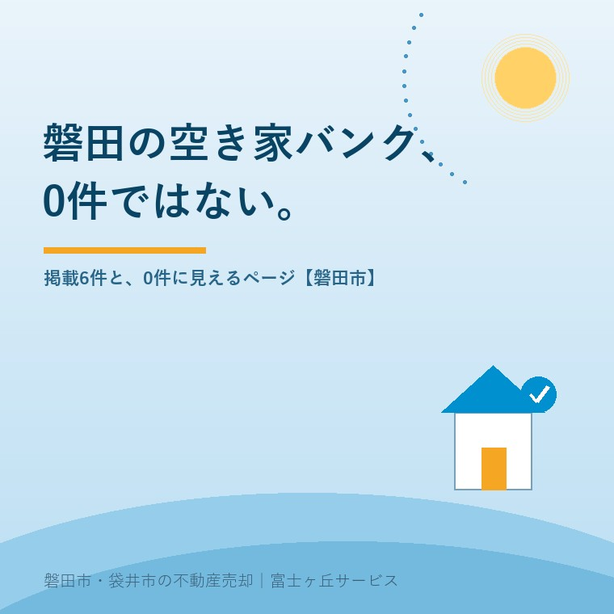

2026年8月31日｜カテゴリ：磐田市／空き家バンク

この記事の要点
Q. 磐田市の空き家バンクって、登録0件なんですよね。
A. 0件ではありません。2026年8月31日時点で市の空き家バンクのページには6件が載っています。ただし市のサイトには「0件」と表示される別ページが1枚あり、そこは本体ページからリンクされていません。検索でそちらに着くと0件に見えます。
磐田市・袋井市・森町では、介護施設の運営から不動産事業を始めた富士ヶ丘サービスのような「介護×不動産」専門の会社に相談するという選択肢があります。
「磐田市の空き家バンク、登録0件らしい」。この話を耳にしたとき、私は真っ先に「そんなはずはない」と思いました。理由は単純で、うちの会社が磐田市の空き家バンクに物件を出しているからです。自分が登録した物件が載っているものが0件と言われれば、それは違うと言うしかありません。
ただ、思っただけでは記事になりません。2026年8月31日に磐田市の公式ページを一枚ずつ開いて確かめました。結果として、0件は間違いで、同時に「0件と表示されるページが実在する」ことも事実でした。両方が本当だったので、そのまま書きます。
磐田市空き家バンクの本体ページ（市サイトのページ番号1009122、更新日2026年8月7日）に掲載されている物件は6件です。特集物件が2件、それ以外の一般の物件が4件で、いずれも売却物件でした。賃貸の区分そのものがありません。
| 区分 | 物件番号・所在 | 価格 | 問合せ先の事業者 |
|---|---|---|---|
| 特集 | No.39 岩井 | 19,800,000円 | 株式会社アーガス イエステーション掛川店 |
| 特集 | No.28 城之崎 | 23,300,000円 | 富士ヶ丘サービス株式会社 |
| 一般 | No.57 東新町 | 8,900,000円 | 有限会社 信和不動産 |
| 一般 | No.50 合代島 | 17,200,000円 | 富士ヶ丘サービス株式会社 |
| 一般 | No.43 海老島 | 8,800,000円 | 株式会社 アエル |
| 一般 | No.19 城之崎 | 18,990,000円 | 株式会社カチタス磐田店 |
磐田市「空き家バンク」（ページ更新日2026年8月7日／2026年8月31日確認）より大石が整理。特集は「スタジアムを感じられる家」（募集期間 令和8年7月17日金曜〜令和8年8月31日月曜）。件数は入れ替わります。
6件のうち2件が当社の扱いです。自社の物件が載っている一覧を指して「0件」と説明されていたことになります。先に断っておくと、この記事は当社の物件の宣伝のために書いているのではありません。件数の話をするのに事業者名を伏せると検証にならないので、そのまま出しています。
価格帯は890万円から2,330万円です。不動産屋の癖で割り戻すと、6件の平均はおよそ1,450万円。磐田市内の中古戸建てとしては、上振れも下振れもない、ごく普通の帯です。空き家バンクというと「タダ同然の家が並んでいる場所」と思われがちですが、少なくとも磐田市の6件はそういう並びではありません。
この記事を書いている今日、ひとつ期限が来ています。特集「スタジアムを感じられる家」の募集期間は、令和8年7月17日金曜から令和8年8月31日月曜まで。つまり本日2026年8月31日が最終日です。特集の枠が外れた後に掲載2件がどう扱われるかは、市のページからは読み取れませんでした。もし特集分が落ちると、残りは一般の4件になります。件数を確認する日によって見える数字が変わる、ということは頭に入れておいてください。
では0件という話がどこから出たのか。市のサイトを辿ると、それらしいページが1枚見つかりました。本体ページの下にある「空き家バンク登録物件一覧」（ページ番号1009259）です。ここには、こう書かれています。
「申し訳ありません。
ただいま登録されている特集以外の物件はございません。」
磐田市「空き家バンク登録物件一覧」（2026年8月31日確認）
ここで一度立ち止まってください。この文面は「特集以外の物件はございません」と言っています。ところが本体ページには、特集ではない一般の物件が4件載っています。2つのページが、同じ日に、正反対のことを言っている状態です。どちらかが古いまま置かれている、と考えるのが素直でしょう。
このページには更新日の記載がありません。そして調べたところ、本体ページのHTMLの中から、このページへのリンクが1本も張られていませんでした。市のサイトを普通にたどっている限り、まずここには行き着きません。逆に言えば、検索エンジン経由でこのページに直接着地した人は、0件という表示だけを見て帰ることになります。
もう一つ、0件が生まれる経路があります。国が用意している全国版空き家バンクです。2026年8月31日時点で、次のようになっていました。
| 掲載先 | 磐田市の件数 | 備考 |
|---|---|---|
| 磐田市サイト「空き家バンク」本体 | 6件 | 特集2件＋一般4件 |
| 磐田市サイト「登録物件一覧」（別ページ） | 0件 | 本体からリンクなし・更新日の記載なし |
| LIFULL HOME'S 空き家バンク | 0件 | 「検索結果は0件です」 |
| アットホーム空き家バンク | 0件 | 「磐田市(0)」。市の専用サイトも掲載0 |
各サイトの表示より大石が整理（2026年8月31日確認）。県の「ふじのくに空き家バンク」は県ページに令和7年3月31日付けで廃止と記載。
磐田市はアットホーム空き家バンクの参画自治体で、市専用のサイトまで用意されています。電話番号も市の担当課のものが載っています。それでも掲載は0件でした。つまり、市の本体ページに6件あるのに、全国に向けた窓口には1件も出ていない。これが今回いちばん引っかかった点です。
先に良い点を数えます。磐田市の空き家への取り組みは、止まっているどころか、公表されているだけで次の4本が並行して動いています。
磐田市の各ページより大石が整理（2026年8月31日確認）。
制度の側は、これだけ手を打っています。空き家等対策計画（計画期間2022年度〜2026年度）の成果目標も具体的で、戸建て住宅の空き家数を令和2年の1,880戸に対し令和8年に2,000戸未満におさえること、管理不全空き家の改善割合を39％から50％以上にすることが掲げられています。
その上で、一事業者として注文したい点が2つあります。
①0件と表示される孤立したページを、そのままにしないでほしい。検索から来た人にとって、そのページが市の公式見解です。本体ページへ転送するか、1行のリンクを足すか、非公開にするか。どれでも構いません。手間としては小さい話ですが、「磐田の空き家バンクは0件だ」という理解が広まる入口になっています。現に私の耳にも入ってきました。
②全国版に6件を流してほしい。市外・県外に住む相続人が磐田の空き家を探すとき、最初に開くのは磐田市のサイトではなく全国版のほうです。専用サイトまで用意されているのに0件では、せっかくの6件が市内の人にしか届きません。空き家を買う人は、多くが市外にいます。これは行政の怠慢という話ではなく、市の本体ページと全国版で情報の流し込みが繋がっていないという、仕組みの問題だと私は見ています。
誤解のないように書いておくと、私は市の担当者を責める気はまったくありません。ページが1枚取り残されるのは、どこの組織でも起きます。うちの会社のサイトにも、消し忘れた古いページはあります。ただ、それが「0件」という数字を伴って外に出ているとき、影響は思ったより大きい、というだけの話です。
ふじがおか実家カルテ｜売ると決める前に、調べるほうを終わらせます
バンクに載せる前に、載せられる家か確かめます。
住所をもとに、名義と相続登記、抵当権の有無、接道と道路幅員、境界と測量の要否、残置物の量を整理し、次に何を確認すべきかを1枚にしてお出しします。作成料0円・入力約1分。申込みだけで売却依頼にはなりません。
ここが実務で一番聞かれるところです。磐田市の空き家バンクは、所有者が自分で直接登録する仕組みではありません。市は登録の条件をこう定めています。
「登録できる中古住宅／以下の条件を全て満たす一戸建ての住宅」
「※居宅以外、一戸建以外、差し押さえ物件、暴力団員等の所有物件は対象外」
磐田市「空き家バンク」（2026年8月31日確認）
4つ目が肝心です。宅地建物取引業者と媒介契約を結んでいることが条件なので、まず不動産会社を決める必要があります。そのうえで事業者が市へ申請します。市のページも、所有者に対しては「空き家バンクに情報を登録している不動産関係事業者等を紹介します」という案内の仕方をしています。
申請には様式第1号「空き家バンク情報登録申請書兼同意書」と様式第2号「空き家バンク情報登録カード」を使い、所有者が分かる資料、媒介契約書の写し、広告のPDFデータ、外観写真データを添えます。提出先は磐田市 建設部 建築住宅課 住宅管理グループ（磐田市国府台3-1 西庁舎2階／電話0538-37-4851）で、電子申請も用意されています。
ここで注意点を1つ。耐震の要件は条件に書かれていません。ただし買主が住宅ローンを使う場合や、市の補助制度を併用する場合は、別の要件が出てきます。中古住宅の取得に対する補助については磐田市「既存住宅取得等事業費補助金」を不動産屋の目で点検するにまとめました。
そして、条件の3つ目「現に居住せず、又は居住する予定のないもの」に当たるかどうかは、名義がはっきりしていることが前提です。親御さんの名義のままで相続登記が終わっていない家は、媒介契約そのものが結べません。空き家バンクの手前で止まる家の多くは、この段階です。相続登記の進め方は相続登記を自分でやるか司法書士に頼むかに書きました。
最後に、私の立場からの見方を書きます。空き家バンクは、売却の手段としては主役ではありません。掲載6件という数字がそれを示しています。磐田市の一戸建て空き家は、令和5年住宅・土地統計調査の「その他の住宅」で2,330戸あります（内訳は磐田市の人口・世帯数2026年7月の記事にまとめました）。
2,330戸に対して掲載6件。割合にすると0.26％です。空き家バンクに載せることが、磐田の空き家問題の主たる出口になっているとは、この数字からは言えません。通常の不動産流通のほうが、桁違いに多くの家を動かしています。
それでも空き家バンクに意味がないとは思いません。市のページに載るという一点で、通常のポータルサイトとは違う層に届きます。市内に縁のある人、移住を考えて自治体のサイトから調べ始める人です。手数料の話でもなく、囲い込みの話でもない。単に、探し方が違う人がいる、というだけのことです。だから当社も2件出しています。
今日、結論を出す必要はありません。売るか貸すか持ち続けるかを決める前に、名義と道路と境界だけ調べておけば、どの選択をするにしても効きます。空き家バンクに載せるにしても、媒介契約を結ぶ段階で結局その3つを聞かれます。市役所に相談に行く前の準備は空き家バンク・市役所相談の前に準備するものにまとめてあります。
掲載中の物件と最新の件数は磐田市建築住宅課へ、登録の可否は媒介を依頼する宅地建物取引業者へ、相続登記と名義の判断は司法書士へ、譲渡所得と控除の判断は税理士へご確認ください。
2026年8月31日時点で、磐田市の空き家バンクのページには6件が掲載されています。内訳は特集物件が2件、それ以外の一般の物件が4件で、すべて売却物件です。賃貸の区分はありません。価格は890万円から2,330万円まで、所在は岩井、城之崎、東新町、合代島、海老島です。掲載は不動産関係事業者からの情報によるもので、件数は入れ替わります。最新の状況は磐田市のページでご確認ください。
市のサイトに「ただいま登録されている特集以外の物件はございません」と表示される別ページが1枚あり、それを見た場合に0件と受け取られている可能性があります。このページは本体ページからリンクされておらず、検索経由で直接たどり着くと0件に見えます。また国の全国版空き家バンク2サイトでも磐田市は0件表示です。市の本体ページには6件が載っています。
磐田市の空き家バンクは、所有者が直接登録する仕組みではありません。市は「不動産関係事業者が所有、もしくは媒介契約を締結しているもの」を登録の条件としており、宅地建物取引業者と媒介契約を結んだうえで、その事業者が市へ申請します。対象は市内の一戸建てで、新築住宅でないこと、現に居住せず居住予定もないことが必要です。窓口は磐田市建設部建築住宅課です。

この記事を書いた人：大石浩之（宅地建物取引士）
磐田市・袋井市・森町で「介護×相続×空き家」に特化した不動産売却支援を行う富士ヶ丘サービスの代表取締役・宅地建物取引士。介護施設の運営から不動産事業を始めた経験をもとに、売主とご家族が困らない売却を一件ずつお手伝いしています。プロフィール
本記事は2026年8月31日時点で磐田市および各空き家バンクサイトが公開している情報に基づく整理であり、掲載物件の内容・価格・成約状況を保証するものではありません。掲載件数は随時入れ替わるため、実際の件数は磐田市のページでご確認ください。本文中の6件には富士ヶ丘サービス株式会社が問合せ先となっている物件が2件含まれます。平均価格および一戸建て空き家に対する掲載割合は大石が計算した概算で、市が公表している数値ではありません。掲載件数と一戸建て空き家数は基準時点が異なります。「0件」と表示されるページの取り扱いおよび全国版空き家バンクへの掲載方針について、市に照会したうえで書いたものではなく、公開情報から確認できた範囲の記述です。登録の可否は媒介を依頼する宅地建物取引業者および磐田市建築住宅課へ、相続登記は司法書士へ、税務は税理士へ、売却の段取りは当社までご相談ください。
磐田市・袋井市・森町の実家じまい・相続空き家の相談
バンクに載せるかどうかの前に、調べます
「まだ売ると決めていない」という段階で構いません。名義と登記、境界、家財の量だけ先に整理します。カルテ申込またはLINEで状況を送ってください。
富士ヶ丘サービス株式会社／静岡県磐田市見付5789番地1／TEL:0538-31-3308／静岡県知事 (2) 第14083号／代表取締役・宅地建物取引士 大石 浩之